Estudio de Fondos ANID en Ciencias Sociales
Patrones de financiamiento FONDECYT y Milenio (2016-2025)

René Canales
Facultad de Ciencias Sociales
Universidad de Chile
Introducción y contexto
Antecedentes
En Chile, el financiamiento científico se distribuye principalmente a través de FONDECYT (desde 1981) y la Iniciativa Científica Milenio (desde 1998), administrados por ANID (Ramos-Zincke 2021).
Las Ciencias Sociales y Humanidades enfrentan tensiones particulares en sistemas de financiamiento basados en métricas de impacto bibliométrico (Brunner y Labraña 2021; Nederhof 2006).
En la última década, el campo en Chile se ha densificado aceleradamente: la oferta de doctorados creció un 61% entre 2017 y 2023 (ministerio_radiografía_2023?).
El problema
Sabemos que el campo tiene más investigadores, más programas, más producción indexada.
Sabemos que las universidades tradicionales concentran el 85% de los proyectos FONDECYT (Ramos-Zincke 2021).
Lo que no sabemos:
- ¿Está el sistema absorbiendo proporcionalmente la presión?
- ¿Qué factores explican los patrones de adjudicación?
- ¿Cómo se distribuyen los recursos al interior de la disciplina?
Objetivos
Caracterizar las postulaciones y adjudicaciones FONDECYT (Iniciación y Regular) y Núcleos e Institutos Milenio en Ciencias Sociales entre 2016 y 2025.
Examinar las asimetrías estructurales del sistema a partir de cuatro dimensiones: género, grupo de estudio, institución patrocinante y macrozona.
Metodología
Bases de datos (repositorio público ANID + reconstrucción manual desde PDFs oficiales):
base_fondecyt_completa: 2016-2025, todas las áreas OCDE.base_fondecyt_sociales_merge_monto: 8.603 postulaciones de Ciencias Sociales.adjudicacion_milenio_limpia_sociales: 26 adjudicaciones en CS (2016-2022).
Aporte metodológico: reconstrucción de las series de montos solicitados y adjudicados por grupo-año-instrumento desde los PDFs oficiales de cada concurso.
\[\text{Tasa de adjudicación} = \frac{N_{\text{adjudicado}}}{N_{\text{adjudicado}} + N_{\text{no adjudicado}}}\]
\[\text{Monto promedio} = \frac{\text{Recursos Totales (miles CLP)} \times 1000}{N^{\circ} \text{ proyectos}}\]
FONDECYT Iniciación
Postulaciones por área OCDE
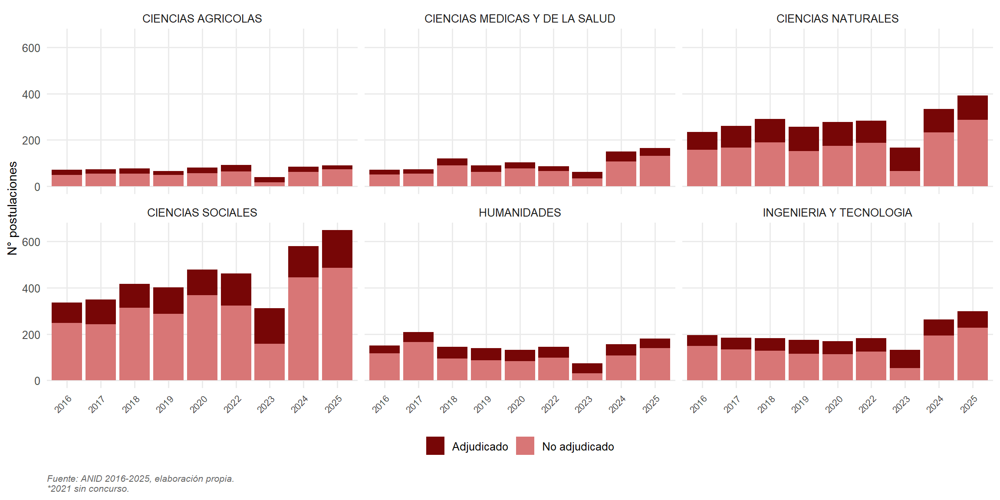
Hallazgos: perspectiva comparada
Las Ciencias Sociales superan 600 postulaciones anuales en 2025.
Volumen que duplica a Ingeniería y cuadruplica a Ciencias Médicas.
El número de proyectos no seleccionados (en rojo claro) es proporcionalmente el más elevado.
Esto evidencia una presión competitiva extrema sobre el instrumento.
Tasa de adjudicación por área
Diferencias por género
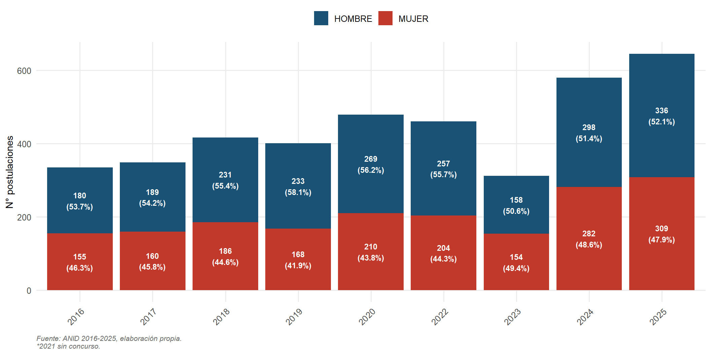
Hallazgos: género
Crecimiento sostenido del total de postulaciones (335 → 645 entre 2016 y 2025).
En el periodo inicial, los hombres representaban el 53-58%.
Desde 2022 las proporciones se acercan a la paridad: 49.4% mujeres / 50.6% hombres.
A diferencia de Regular, en Iniciación se observa una tendencia clara hacia la equidad.
Adjudicaciones por grupo de estudio
Hallazgos: grupos de estudio
Educación lidera con un crecimiento sostenido durante todo el periodo.
En segundo lugar: Ciencias Jurídicas y Políticas y Sociología, Trabajo Social y Cs. de la Comunicación.
Geografía y Urbanismo y Antropología y Arqueología mantienen volúmenes más bajos pero estables.
El crecimiento del área es transversal: todos los grupos aumentan adjudicaciones hacia 2025.
Composición por género dentro de grupos
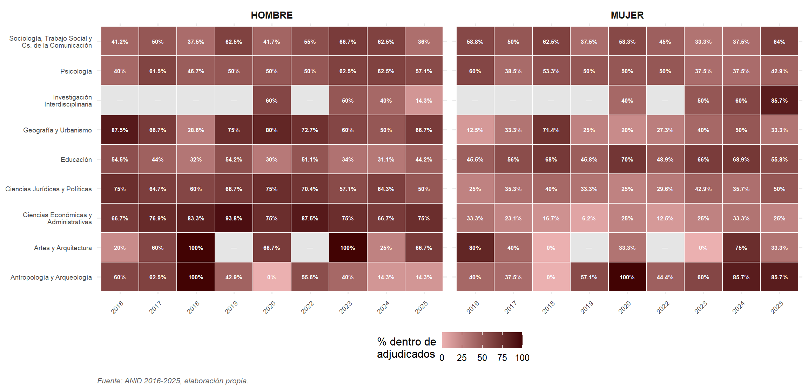
Monto promedio adjudicado por grupo
Instituciones líderes (Top 15)
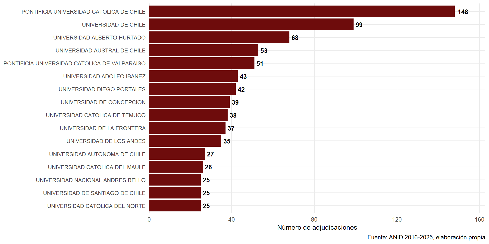
CRUCH vs No CRUCH
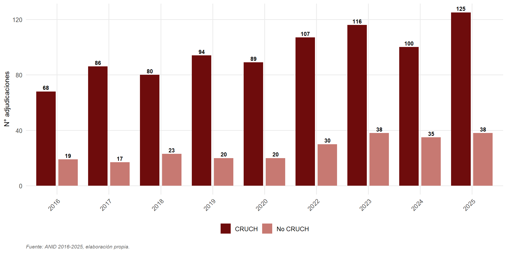
Pública vs Privada
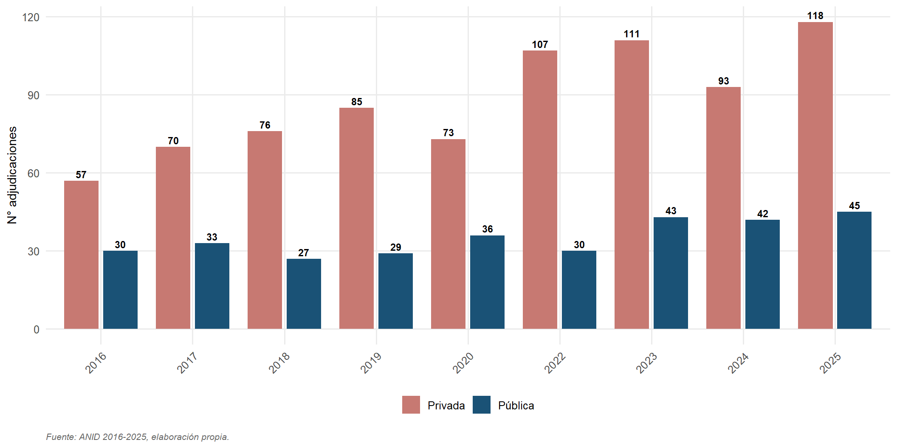
Hallazgos: instituciones
CRUCH concentra el 77% de las adjudicaciones en Iniciación (2025).
Las privadas captan el 72% (cuando se desagrega por naturaleza jurídica).
Esta diferencia revela una doble estratificación:
- Vertical (CRUCH vs no CRUCH): asociada a trayectoria.
- Horizontal (pública vs privada): asociada a naturaleza jurídica.
Las dos lecturas son complementarias, no contradictorias.
Distribución territorial
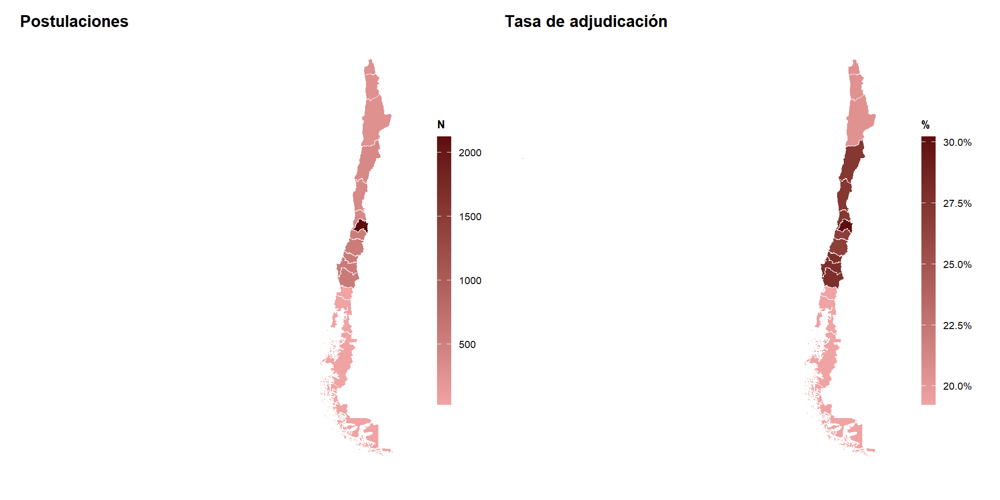
Hallazgos: territorial
La macrozona Metropolitana concentra la mayoría de postulaciones y adjudicaciones.
Crecimiento de RM: 48 adjudicaciones en 2016 → 97 en 2025.
Regiones se mantienen estancadas en rangos bajos (Norte y Austral cercanos a cero).
La brecha capital-regiones no se reduce, se amplía.
FONDECYT Regular
Postulaciones por área OCDE
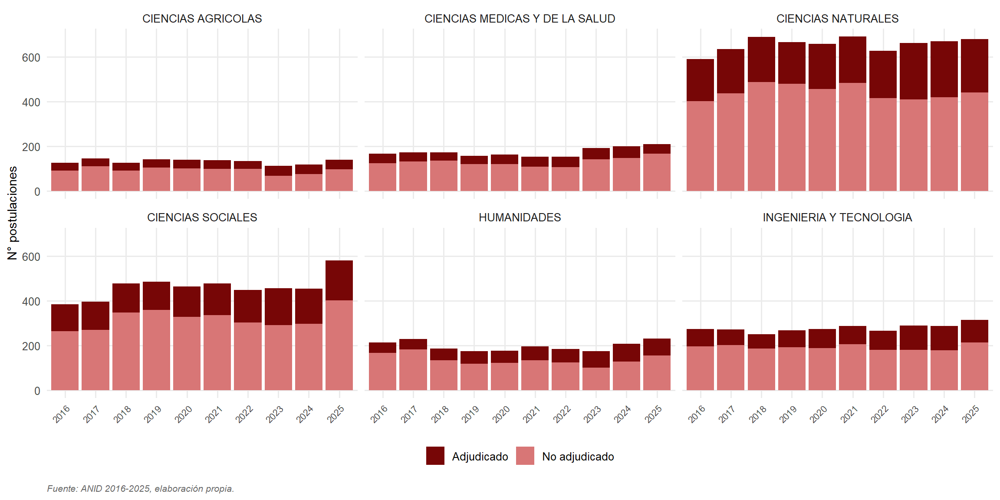
Hallazgos: perspectiva comparada
Las Ciencias Sociales se ubican junto a Ciencias Naturales en el liderazgo del instrumento.
Supera consistentemente las 400 postulaciones anuales, con máximo histórico en 2025.
A diferencia de Iniciación, no presentó contracción en 2023 — trayectoria estable.
Tasa de adjudicación estable en torno al 30-35%, sin volatilidad.
Diferencias por género
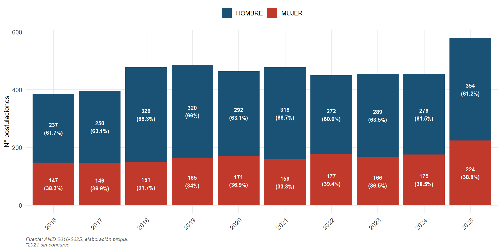
Brecha de género: hallazgo clave
En Regular, las mujeres se mantienen estancadas en ~38% de las postulaciones durante toda la década.
Sin embargo, sus tasas de adjudicación son comparables o superiores a las masculinas en varios años (2017, 2023-2024).
La brecha opera en la etapa de postulación, no en la evaluación. Hipótesis del “leaky pipeline”.
Monto promedio adjudicado por grupo
Instituciones líderes (Top 15)
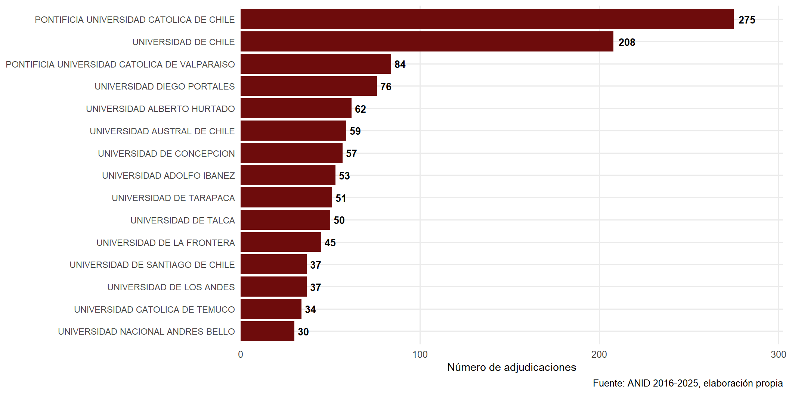
CRUCH vs No CRUCH (Regular)
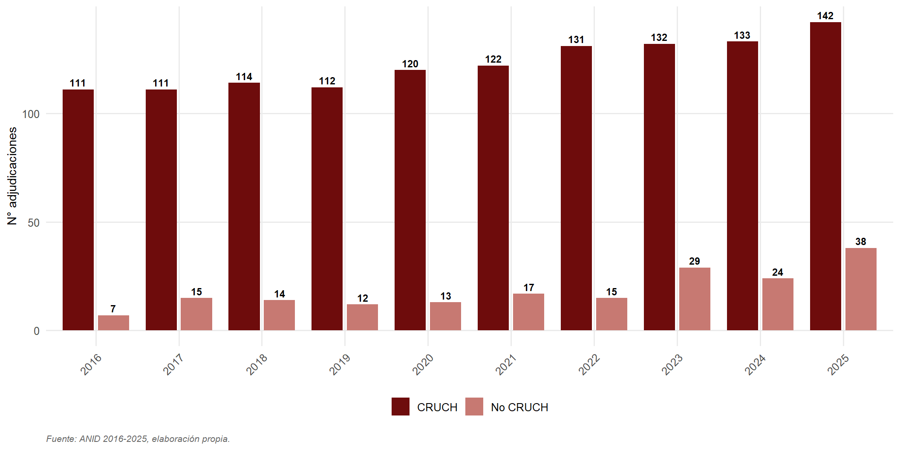
Asimetría profundizada en Regular
En Regular, las CRUCH concentran el 81% de las adjudicaciones — brecha más pronunciada que en Iniciación.
Regular privilegia trayectorias consolidadas como PI, lo que refuerza la ventaja acumulativa del sistema tradicional.
Las nuevas universidades encuentran un techo más rígido en el tramo senior del financiamiento concursable.
Distribución territorial (Regular)
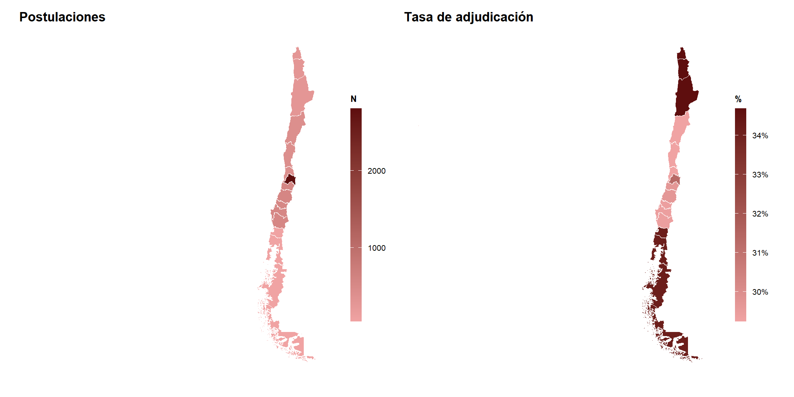
Núcleos e Institutos Milenio
Limitaciones de la base Milenio
Cobertura discontinua: 2016, 2017, 2020, 2021 y 2022 (sin datos para 2018-2019 ni 2023-2025).
N reducida: solo 24 adjudicaciones en Ciencias Sociales en todo el periodo.
Variables no disponibles: institución patrocinante, grupo de evaluación, montos.
Análisis se restringe a tres dimensiones factibles: área OCDE, género y territorio.
Adjudicaciones por área OCDE
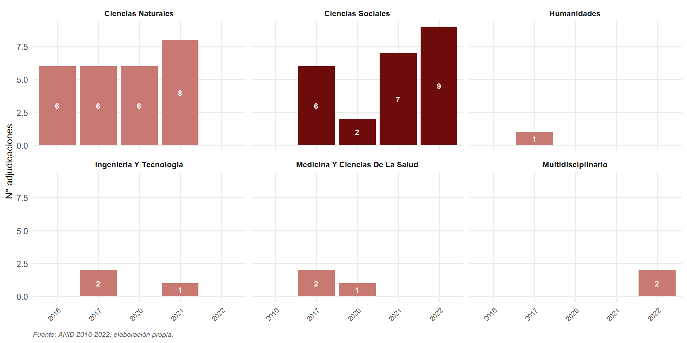
Concentración territorial extrema
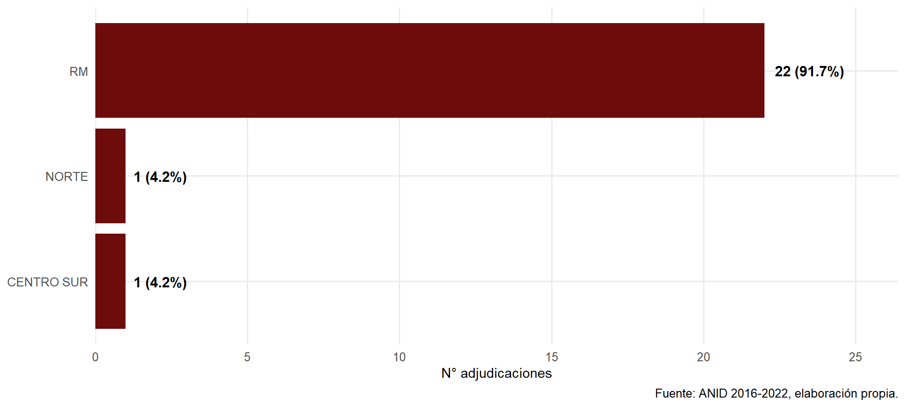
Milenio: un fenómeno santiaguino
22 de 24 adjudicaciones (92%) en Ciencias Sociales se concentran en la Región Metropolitana.
Sin presencia en macrozonas Centro, Sur y Austral durante todo el periodo observado.
Concentración considerablemente más extrema que la observada en FONDECYT.
Conclusiones
Cuatro hallazgos transversales
Expansión sostenida con techos competitivos: la demanda crece, pero las tasas de adjudicación se mantienen estables. Sistema con techo presupuestario rígido.
Brechas de género diferenciadas por instrumento: paridad creciente en Iniciación, brecha estancada en Regular (38% mujeres). Opera en la postulación, no en la evaluación.
Asimetría institucional estructural: CRUCH concentra 77-81% de adjudicaciones. Doble estratificación (vertical CRUCH y horizontal público/privado).
Concentración territorial creciente: Santiago captura la mayor parte del incremento. Milenio en CS opera como fenómeno casi exclusivamente santiaguino.
Tres tensiones abiertas
Expansión vs sostenibilidad: si el sistema sigue formando capital humano sin expandir financiamiento, las tasas de adjudicación seguirán erosionándose.
Mérito individual vs ventajas acumulativas: los instrumentos premian trayectorias que dependen de las condiciones materiales de las instituciones de origen.
Centralización vs descentralización: el predominio santiaguino plantea preguntas sobre el rol de ANID en el desarrollo científico regional.
Rutas para investigaciones futuras
Acceso a datos finos: insistir en puntajes de evaluación para examinar sesgos sistemáticos.
Estudios cualitativos sobre las brechas de género en el tramo senior.
Análisis territorial específico que distinga estrategias institucionales en regiones.
Integración con otros instrumentos ANID: FONDAP, Basales, becas — para construir una visión del ciclo completo de carrera académica.
Referencias
Brunner, José Joaquín, y Julio Labraña. 2021. «La Investigación En Ciencias Sociales y Humanidades: Sus Debates e Impactos». Puntos de Referencia.
Nederhof, Anton J. 2006. «Bibliometric Monitoring of Research Performance in the Social Sciences and the Humanities: A Review». Scientometrics 66 (1): 81-100. https://doi.org/10.1007/s11192-006-0007-2.
Ramos-Zincke, Claudio. 2021. «A Well-Behaved Population: The Chilean Scientific Researchers of the XXI Century and the International Regulation». Sociologica, septiembre, 153-178 Pages. https://doi.org/10.6092/ISSN.1971-8853/10824.